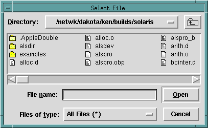

file_select_dialog/ [1,2,3] — select a file
file_select_dialog(FileName)
file_select_dialog(Options, FileName)
file_select_dialog(Interp, Options, FileName)These predicates allow the user to select a file using the native file selection dialogs on each platform. The shorter versions are defined by :
file_select_dialog(FileName)
:-
file_select_dialog(shl_tcli, [title = ' Select File ' ], FileName) .
file_select_dialog(Options, FileName)
:-
file_select_dialog(shl_tcli, Options, FileName) .For the general call
file_select_dialog(Interp, Options, FileName)Interp should be an atom naming a Tcl interpreter, Filename should be an uninstantiated variable, and Options should be a list of options as follows :
defaultname = DefaultName default file name
ext = Ext to either add or use for selection
mode = new/select/save_as default = select
initialdir = Initial dir in which to begin…
title = WindowTitle
filetypes = FileTypesList
where FileTypesList is a list of the form
[[Desc1 [ext1]], [Desc2, [ext2],...]
and the Desci and exti are all atoms
The call
?- file_select_dialog(File).would produce this popup :
